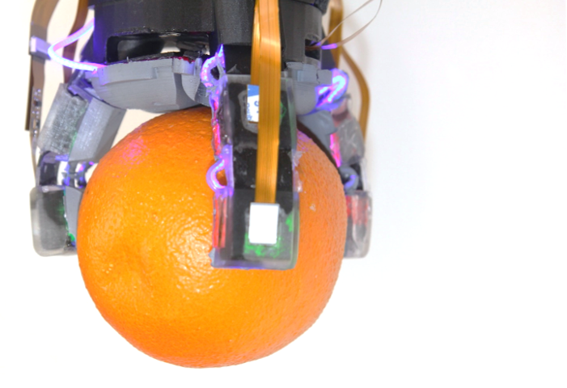
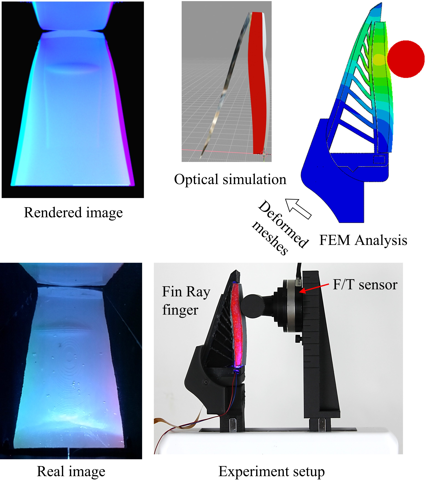
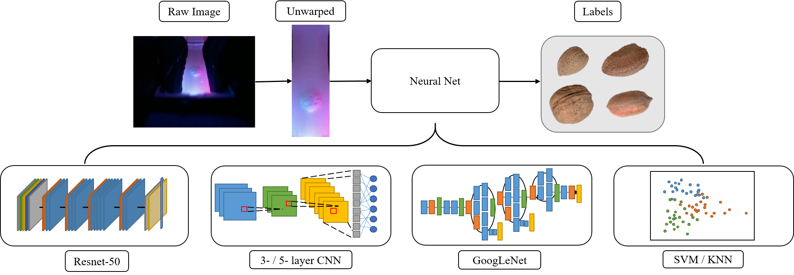
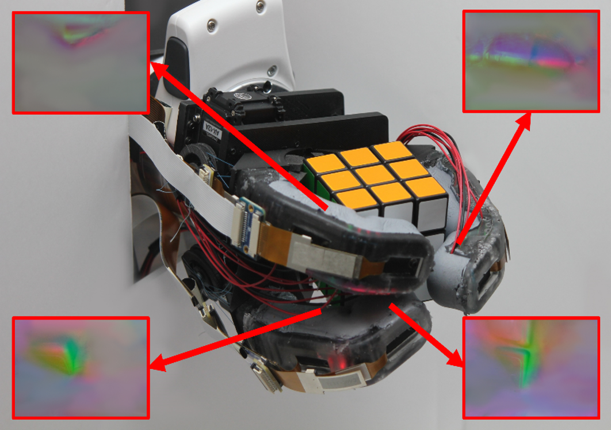
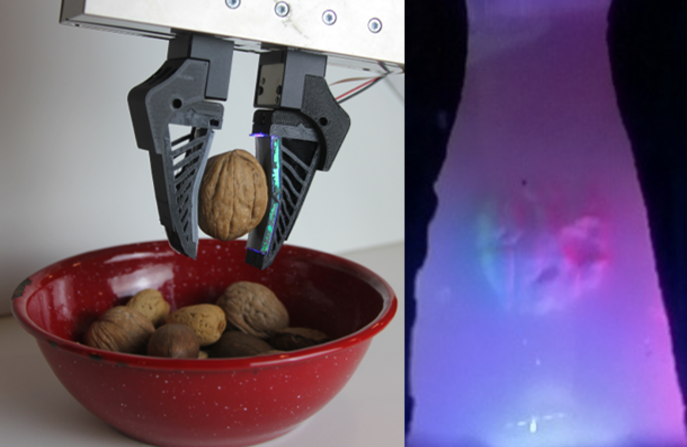
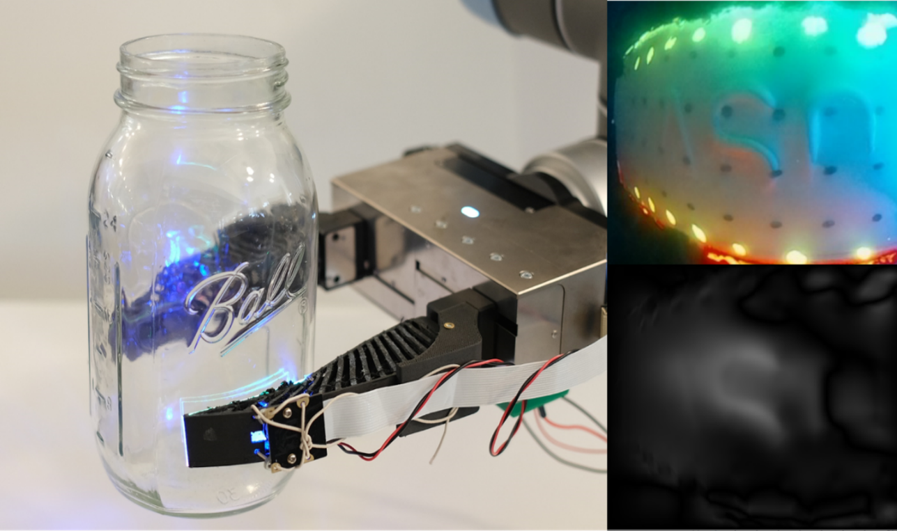
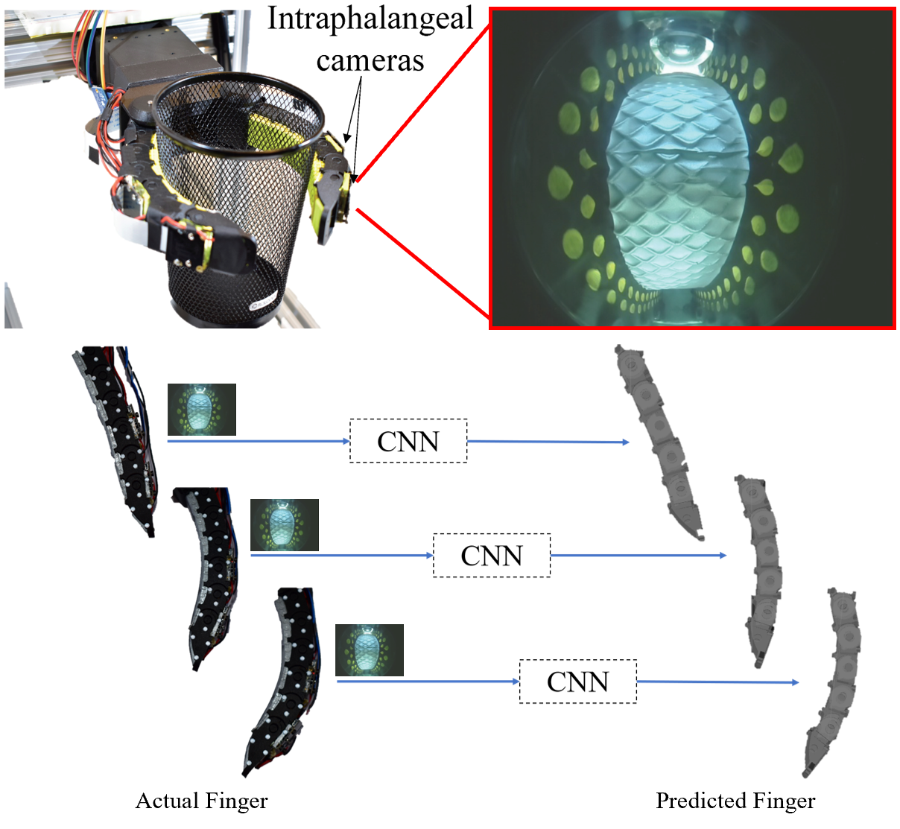

Sandra Q. Liu
and Edward H. Adelson

Yuxiang Ma*, Arpit Agarwal*,
Sandra Q. Liu*,
and Edward H. Adelson

Sandra Q. Liu,
Yuxiang Ma,
and Edward H. Adelson

Sandra Q. Liu*,
Leonardo Zamora Yañez*, and
Edward H. Adelson

Sandra Q. Liu,
Yuxiang Ma
and Edward H. Adelson

Sandra Q. Liu
and Edward H. Adelson

Yu She*,
Sandra Q. Liu*,
Peiyu Yu*, and Edward H. Adelson
*denotes equal contribution

MIT Abstracts [October 2024]
Bristol Softlab Seminar [September 2024]
Williams College Computer Science Colloquium [May 2023]
CMU Robotics Institute Seminar [August 2022]
PhD Thesis, Massachusetts Institute of Technology, January 2024
Master's Thesis, Massachusetts Institute of Technology, June 2020